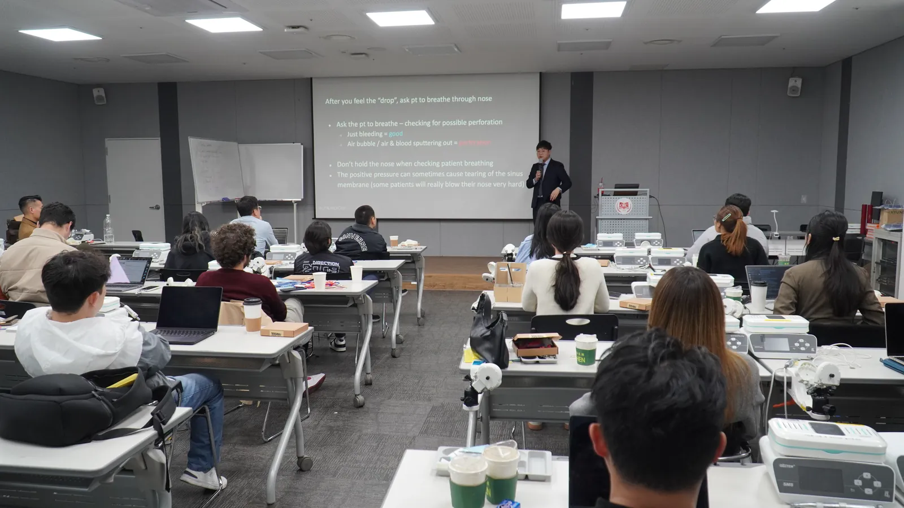
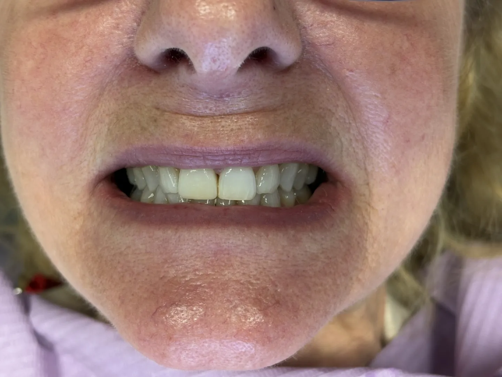

Mount Kisco, NY · Kent, CT · Stamford, CT
Dentistry Built on Trust. Implants Designed to Last.
Modern implant and family dentistry from Dr. GiTae Kwon and Dr. Byungchul Park. A calm visit, a clear plan, and a smile you will want to show.

What We Do
Every service, right here.
Implants are the specialty. General, cosmetic and emergency dentistry keep the whole family covered.

Dental Implants
A missing tooth, replaced by a surgeon who teaches the technique. Single teeth or full arches.
Learn more →Full-Arch Implants
All-on-4 and All-on-X. A full set of fixed teeth on implants.
Learn more →Same-Day Implants
Extraction and implant in one visit when the case allows.
Learn more →Porcelain Veneers
Custom porcelain shells for a natural-looking smile, often in a few visits.
Learn more →Smile Makeovers
Whitening, veneers and personalized treatments to enhance your smile.
Learn more →Emergency Care
Relief for dental pain and injuries. Call and tell the team what is going on.
Learn more →Cleanings and Exams
Catching problems early saves you time and money.
Learn more →
Your Doctors
Two doctors. One team.
Dr. GiTae Kwon is an implant surgeon with a master's degree in dental implantology who also teaches implant surgery to other dentists. Dr. Byungchul Park has cared for Connecticut patients since 2015 and is known for a calm, patient and exceptionally gentle approach.
- Full mouth reconstruction and All-on-X treatment
- Modern diagnostic tools and treatment equipment
- Clear communication and close attention to comfort

Taught, Not Just Practiced
The surgeon other dentists learn from.
Dr. Kwon teaches implant surgery to other dentists. The technique you get in the chair is the same one he demonstrates on stage.
Real Patients, Real Results
Before and after.



What Patients Say
Calm, gentle, on time.
“Dr. Kwon and his staff are excellent. They make me feel calm and unafraid, amazing for me. I believe after many years, they will help me to smile again.”Sue Haneman, verified patient
“Simply the most efficient, ouch-less, on time, professional office. Expect meticulous exceptional gentle care. After all these years I can say, you will smile more.”Linda A., patient
Watch patient stories
Short videos from patients in Mount Kisco, Kent and Stamford, in English and Spanish.
Testimonials →Our Offices
Three offices. One standard.
Ready When You Are
Your next smile starts with one visit.
Book online at any office, or call and talk to a person.